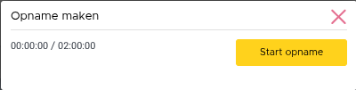
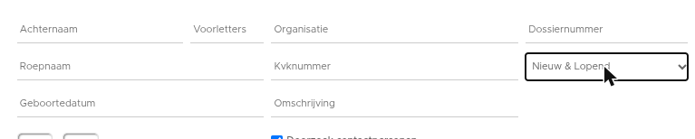

Gespreksopname omzetten in acties, verbeteringen TP incasso en meer
Op dinsdag 12 augustus zijn Elements en eBlinqx weer verbeterd en uitgebreid met nieuwe features. Deze release bevat onder andere filteren op posten dubbele prolongatie en verbeteringen TP incasso factuur. Ook zijn er nieuwe features alleen voor eBlinqx, namelijk gemakkelijk gespreksopname omzetten in acties en de controle geldigheid werkgeversverklaring en loonstrook.
eBlinqx Only
Gemakkelijk gespreksopname omzetten in acties
Let op: alleen beschikbaar in eBlinqx
Het is nu mogelijk om geluidsopnames aan het klantdossier te koppelen en met deze opnames verschillende acties uit te voeren. Dit vanuit het nieuwe tabblad Gespreksopname onder het tabblad Communicatie. Hier kan je een opname starten en er staat een overzicht van alle geluids- of beeldopnamen met bijbehorende gegevens. Door middel van de iconen kan je gemakkelijk, indien deze zijn aangemaakt, het transcript (loep), de samenvatting van de geluidsopname (tekstbestand) en de concept e-mail met daarin het gesprek als samenvatting (envelop) bekijken. Door middel van het downloadicoon kan je het bestand downloaden.


Is de samenvatting nog niet aangemaakt dan staat het icoon er niet, maar kan je deze via het sterretjesicoon of door middel van het pijltje direct aanmaken. Maak je de samenvatting aan via het pijltje dan kan je extra input geven in welke vorm je de samenvatting wilt hebben. Ook is het mogelijk om via het pijltje andere acties uit te voeren, namelijk concept e-mail met daarin de samenvatting van het gesprek maken, samenvatting als registratie opslaan en taken aanmaken. Hier lees je meer over de verschillende opties.
Controle geldigheid werkgeversverklaring en loonstrook
Let op: alleen beschikbaar in eBlinqx
In een vorige release werd de controle geldigheid document in eBlinqx geïntroduceerd. Hieraan is nu ook de werkgeversverklaring en loonstrook toegevoegd. De volgende zaken worden gecontroleerd als de werkgeversverklaring aan het stuk wordt gekoppeld:
- Met welke versie de werkgeversverklaring is gemaakt. Als dit een verouderde versie is dan verschijnt hiervan een melding.
- Het aanwezig zijn van de handtekening. Als deze ontbreekt, verschijnt hiervan een melding
- Of de werkgeversverklaring nog geldig is. Is dit niet het geval dan kunnen de volgende meldingen verschijnen:
- Deze werkgeversverklaring is niet langer geldig.
- Deze werkgeversverklaring is binnenkort niet meer geldig.
De controle van de werkgeversverklaring vindt ook in UwKluis / Online klantportaal plaats.
Wanneer de loonstrook wordt gekoppeld aan het stuk, wordt het volgende gecontroleerd:
- Geboortedatum; staat onder de persoon die gekoppeld is aan het stuk (eerste persoon of partner) een geboortedatum opgevoerd dan wordt gecontroleerd of deze overeenkomt met de geboortedatum op de loonstrook. Zo niet dan wordt er een melding getoond dat het lijkt of het aangeleverde document over een ander persoon gaat. Deze controle wordt vooralsnog alleen gedaan in eBlinqx, niet in UwKluis / Online klantportaal. De verwachting is dat deze controle halverwege augustus ook in UwKluis / Online klantportaal wordt gedaan.
De meldingen van de werkgeversverklaring en loonstrook worden getoond in de stukkenlijst, het scherm van het stuk beoordelen en bewerken. In Soort Documenten Beheer geef je aan welke documenten je automatisch wilt laten controleren. Vooralsnog werkt de functionaliteit alleen voor het identiteitsbewijs, de werkgeversverklaring en de loonstrook. Met de release zijn onder deze documenten de vinkjes automatisch aangezet.
Elements en eBlinqx
Zoeken op dossiers veranderd
Vanaf nu staat in het zoekfilter op het dashboard het veld 'Status' standaard op 'Nieuw en Lopend'. Dit komt de performance ten goede, omdat alleen gezocht wordt naar dossiers die de dossiersysteemstatus 'Nieuw' of 'Lopend' hebben. Door middel van een setting is het mogelijk om 'Alle' als standaard in te stellen, dan wordt er binnen alle dossiersysteemstatussen gezocht. Is dit gewenst? Stuur dan een e-mail naar support-eblinqx@blinqx.tech.


Filteren op posten dubbele prolongatie
Vanaf nu kan je in de ADN batch filteren op de posten waarbij spraken is van een dubbele prolongatie. Deze posten zijn herkenbaar aan de rode pijltjes. Bij deze posten kan er ook sprake zijn mismatching wat je kunt controleren onder het tabblad Matches in de ADN module. Het filteren onder dit tabblad is verbeterd wat het zoeken vergemakkelijkt.
Verbeteringen TP incasso factuur
Vanaf nu wordt er voor de inhoud van de TP incasso factuur, naast de productkaart, ook gekeken naar het mutatievoorstel dat gemaakt is bij het aanmaken van de boekingsregel mits er geen conflict is of het mutatievoorstel is afgekeurd. Op deze manier wordt de actuele informatie van die periode getoond op de factuur. Daarnaast kan je aangeven of je op de factuur zowel de bruto- als nettopremie wilt tonen of alleen de nettopremie. Dit kan je aangeven in Administratie onderhoud. Ten slotte wordt assurantiebelasting niet meer getoond op de factuur als deze 0 euro is.
Assurantiebelasting bij eenmalige boeking verbeterd
Bij het maken van een eenmalige boeking (TP incasso) wordt nu juist bepaald of de polis assurantiebelastingplichtig is. Voorheen werd hier altijd assurantiebelasting op berekend. Hier vind je meer informatie wanneer er wel of geen assurantiebelasting wordt berekend.
Verbeteringen rappeltaak mutatievoorstel
Naam en inhoud taak verduidelijkt
De naam en de inhoud van de taak zijn veranderd, waardoor het nu duidelijker is om welke mutatie het gaat.
Startdatum rappeltaak nieuwe polis
Bij het aanmaken van een nieuwe polis krijgt de rappeltaak als startdatum de ingangsdatum van de polis. Verander je tijdens het aanmaken van de nieuwe polis de ingangsdatum (deze staat onder het blok Looptijd) dan verandert de datum van de rappeldatum mee. De taak wordt direct na het opslaan van de nieuwe polis aangemaakt. Wijzig je naderhand, na het aanmaken, de ingangsdatum van het polisonderdeel dan reageert de rappeltaak hier niet meer op.
Rappeltaak wordt direct aangemaakt
De rappeltaak wordt in alle gevallen nu direct aangemaakt ongeacht je volgens de setting maatschappijvolgend of controlerend werkt. Voorheen werd bij de setting maatschappij controlerend de taak pas aangemaakt op de dag van de rappeldatum mits het voorstel niet is afgehandeld.
Niet afgeronde betalingsbestanden verduidelijkt
In de module 'Incasso- en excassobestanden maken' wordt nu visueel duidelijk weergegeven als het niet gelukt is om het betalingsbestand volledig te verwerken en af te ronden. Onder het tabblad 'Aangemaakte bestanden' is het euroteken van niet verwerkte bestanden grijs. Als je het bestand opent, zie je in de tabel of deze wel of niet is afgerond. Zo kan je gemakkelijk zien welk bestand niet volledig is verwerkt als je de melding krijgt dat het niet mogelijk is om een betalingsbestand aan te maken.
Oude pensioenkaarten overzetten naar nieuwe pensioenkaart
In de release van juni hebben we de nieuwe pensioenkaart geïntroduceerd. Vanaf nu is het mogelijk om de bestaande producten met de oude pensioenkaart om te zetten naar de nieuwe productkaart. Dit kan via actieknop 'Converteer naar nieuwe pensioenkaart'. Er verschijnt een dropdownmenu waarin je kan aangeven naar welk type pensioen het product omgezet moet worden. De velden worden overgenomen als deze eenduidig zijn. Het kan zijn dat je handmatig nog velden moet aanvullen. Alle communicatie en documentatie blijft onder het product staan. De data uit de oude pensioenkaart die niet overgezet kon worden naar de nieuwe pensioenkaart wordt opgeslagen als registratie.
De volgende oude pensioenkaarten kan je niet converteren, er verschijnt dan een melding:
- Een product met meerdere delen van type individueel
- Een product met meerdere delen van type collectief/semi collectief en dan willen omzetten naar individueel/ collectief werknemer
Overige verbeterpunten
- Er zijn technische aanpassingen gedaan waardoor ADN batches sneller worden verwerkt
- Het is mogelijk om een betalingsoverzicht vanuit de workflow aan te maken. In deze actie is het nu mogelijk om de template Betalingsoverzicht te selecteren en je kunt aangeven dat je alleen de facturen met betaalwijze automatische incasso wilt opnemen in het betalingsoverzicht
- Lloyds bank werkt nu ook met IA/IX berichten waarmee je de hypotheekdata kunt actualiseren
- Het is nu mogelijk om voor de koppeling Finly een ander API Domain in te vullen, waardoor het mogelijk is om bijvoorbeeld eerst een testomgeving in te stellen. Voorheen stond dit hard geprogrammeerd
- Vanaf nu is het mogelijk om in het overzicht openstaande posten te filteren op boekjaar en periode. Voorheen was het alleen mogelijk om te zoeken op boekdatum
- Wij hebben diverse verbeteringen voor onze interne conversietool doorgevoerd. Hierdoor wordt de doorstroom van de conversies verbeterd
- In de vorige release is het mogelijk gemaakt om de eigen risico boeking aan een schademelding te koppelen. In eerste instantie werden hier alleen lopende schadeverzekeringen getoond, nu zijn dit alle schademeldingen ongeacht de status
- Vanaf nu zijn de nieuwe tags algemeen->vandaag, algemeen->vandaag|eerstedag en algemeen->vandaag|eerstewerkdag beschikbaar
- Op diverse documenten vinden er controles plaats in zowel UwKluis / Online klantportaal als eBlinqx en er kan dan een melding verschijnen. De meldingen in UwKluis / Online klantportaal zijn vanaf nu gericht op de consument en de meldingen in eBlinqx zijn gericht op de adviseur